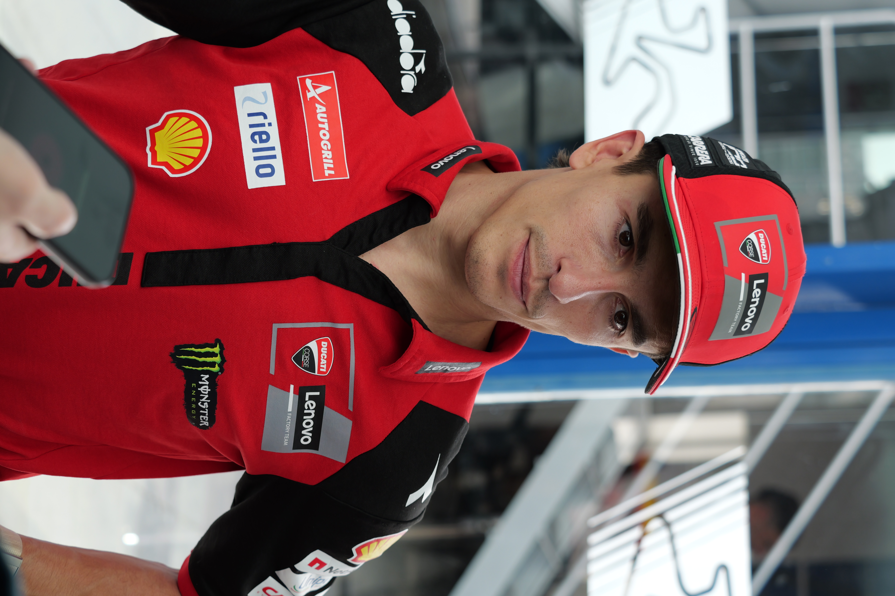

O GP do Catar de MotoGP deste ano será um dos eventos mais importantes da reta final do Campeonato Mundial de Motovelocidade. A etapa acontece em uma pista conhecida pelas corridas noturnas, longas retas e curvas de alta velocidade.
A prova será a 20ª das 22 etapas previstas para a temporada e terá um ingrediente especial: a possibilidade de definição antecipada do título. Marc Márquez, da Ducati Lenovo Team, chega ao Catar com 399 pontos, 44 de vantagem sobre Jorge Martín, da Aprilia Racing.
Além da disputa pelo campeonato, o fim de semana oferece uma combinação de características que transformaram Lusail em um circuito emblemático da MotoGP. A iluminação artificial, o cenário do deserto e as exigências técnicas do traçado criam um desafio particular para pilotos e equipes.
Programação e horários no Brasil
O cronograma do GP está distribuído em três dias, com treinos na sexta-feira, classificação e Sprint no sábado e a corrida principal no domingo.
Todos os horários abaixo estão no fuso de Brasília:
- Sexta-feira, 6 de novembro — Treino livre 1: 8h45
- Sexta-feira, 6 de novembro — Treino classificatório (Practice): 13h
- Sábado, 7 de novembro — Treino livre 2: 8h
- Sábado, 7 de novembro — Classificação (Q1 e Q2): a partir das 8h40
- Sábado, 7 de novembro — Corrida Sprint: 13h
- Domingo, 8 de novembro — Warm-up: 8h40
- Domingo, 8 de novembro — Corrida da Moto3: 10h
- Domingo, 8 de novembro — Corrida da Moto2: 11h15
- Domingo, 8 de novembro — Corrida principal da MotoGP: 13h
A Sprint terá 11 voltas, enquanto a corrida principal será disputada em 22 voltas, totalizando 118,36 quilômetros. Os horários seguem a programação divulgada para a etapa e estão sujeitos a alterações pela organização.
No Brasil, a programação do GP do Catar tem transmissão prevista pela ESPN 4 e pelo serviço de streaming Disney+.
Marc Márquez pode conquistar o título mundial
A principal atração competitiva do GP do Catar é a situação de Marc Márquez na classificação. O espanhol assumiu uma vantagem importante depois de vencer o GP da Malásia, em Sepang, no dia 1º de novembro.
Naquela corrida, Márquez conquistou sua sétima vitória em Grandes Prêmios na temporada e terminou à frente de Pedro Acosta, segundo colocado, e Álex Márquez, terceiro.
O cenário antes do GP do Catar apresenta os seguintes protagonistas:
- Marc Márquez — Ducati Lenovo Team — 399 pontos, líder do campeonato.
- Jorge Martín — Aprilia Racing — 355 pontos, vice-líder e principal perseguidor.
- Marco Bezzecchi — Aprilia Racing — 332 pontos, terceiro colocado e ainda na disputa matemática.
Para garantir matematicamente o título no Catar, Márquez precisa somar pelo menos 30 pontos a mais que Martín e oito a mais que Bezzecchi ao longo do fim de semana.
A situação de Martín também merece atenção. O espanhol sofreu uma lesão no punho durante a etapa australiana e tentou participar do GP da Malásia, mas desistiu da disputa. Sua participação no Catar depende de avaliação médica antes das atividades.
A combinação entre a vantagem de Márquez e a condição física do adversário coloca Lusail como um possível palco para a conquista do oitavo título do espanhol na categoria principal.
Características e desafios da pista
O Circuito Internacional de Lusail é um dos traçados mais reconhecidos da MotoGP. Localizado nos arredores de Doha, foi inaugurado no calendário do Mundial em 2004 e ganhou projeção ainda maior em 2008, quando recebeu o primeiro Grande Prêmio noturno da história da categoria.
O circuito apresenta características que exigem equilíbrio entre velocidade, estabilidade e precisão. Sua reta principal ultrapassa um quilômetro, enquanto a sequência de curvas oferece diferentes desafios de pilotagem.
Os principais números de Lusail são:
- Extensão: 5,38 quilômetros.
- Largura: 12 metros.
- Maior reta: 1.068 metros.
- Curvas: 16, sendo dez à direita e seis à esquerda.
- Distância da corrida principal: 118,36 quilômetros.
- Voltas previstas: 22.
A longa reta principal favorece velocidades elevadas e cria oportunidades de ultrapassagem nas zonas de frenagem. Entretanto, o desempenho em Lusail não depende apenas da potência do motor.
O traçado exige fluidez nas mudanças de direção e estabilidade para manter velocidade nas curvas de média e alta. Um acerto excessivamente voltado para as retas pode comprometer o rendimento nos setores mais sinuosos.
Outro aspecto importante é o desgaste dos pneus. Como a corrida acontece sob iluminação artificial, as condições do asfalto e a evolução da temperatura ao longo da noite entram no planejamento estratégico das equipes.
A localização no deserto também representa uma particularidade. O circuito utiliza áreas de grama artificial nas proximidades da pista para ajudar a impedir que a areia seja transportada pelo vento para o asfalto.
O que observar durante a corrida em Lusail
A classificação será um ponto importante para a definição do fim de semana. Em uma pista com retas longas e curvas rápidas, largar nas primeiras posições permite disputar a liderança sem precisar recuperar tantas colocações no início.
A Sprint também terá um peso especial. Além de distribuir pontos para o campeonato, a prova curta oferece uma oportunidade de avaliar o ritmo competitivo das motos em condições semelhantes às da corrida principal.
Outro fator será a administração dos pneus. A capacidade de preservar desempenho nas voltas finais pode fazer a diferença, especialmente quando os pilotos estiverem próximos e disputando posições.
A Ducati chega com Márquez em posição privilegiada na classificação, mas a Aprilia mantém dois representantes entre os três primeiros colocados do campeonato. A KTM, com Pedro Acosta, também aparece como uma possível protagonista.
Acosta venceu a Sprint da Malásia e terminou a corrida principal em segundo lugar, demonstrando competitividade na reta final da temporada.
A história recente de Lusail também mostra que diferentes pilotos podem encontrar bom rendimento no circuito. Márquez venceu a etapa em 2014 e 2025, Francesco Bagnaia triunfou em 2024, Fabio Di Giannantonio ganhou em 2023 e Enea Bastianini conquistou sua primeira vitória na MotoGP justamente no Catar, em 2022.
Brasil na disputa
A etapa do Catar também terá interesse especial para os brasileiros por causa de Diogo Moreira, piloto da Pro Honda LCR.
O brasileiro disputa sua temporada de estreia na classe principal e chega a Lusail envolvido na disputa pelo reconhecimento de melhor estreante do ano.
Segundo o cenário apresentado pela MotoGP antes da etapa, Moreira pode garantir o prêmio de Rookie of the Year caso marque 15 pontos durante o fim de semana.
Para o piloto, Lusail representa mais uma oportunidade de desenvolver sua adaptação à categoria principal e buscar um resultado importante nas últimas provas da temporada.
Desfalques e mudanças no grid para o GP do Catar
O Grande Prêmio terá mudanças importantes na relação de participantes.
A Yamaha anunciou que não disputará a etapa devido às restrições corporativas de viagem para o Oriente Médio. A decisão também afeta a equipe Prima Pramac Yamaha, deixando os representantes da fabricante fora da corrida.
A organização da MotoGP informou que mantém os planos para a realização da prova, após avaliações de segurança e consultas com as autoridades locais.
Outra ausência é Álex Márquez, que passou por cirurgia no ombro após o GP da Malásia. Iker Lecuona foi anunciado como seu substituto na Gresini Racing.
Por outro lado, Fermín Aldeguer foi anunciado para retornar às atividades após se recuperar de uma lesão na mão direita, com participação condicionada à avaliação médica prevista antes do evento.
As alterações tornam a formação definitiva do grid um dos pontos de atenção na abertura do fim de semana.
Mudanças de datas da corrida
Originalmente, a etapa estava programada para abril, mas a MotoGP decidiu transferi-la para novembro em razão da situação geopolítica no Oriente Médio.
A mudança foi anunciada em março, em conjunto com a Federação Internacional de Motociclismo e as autoridades envolvidas na organização da corrida.
O adiamento também provocou ajustes nas últimas provas da temporada. O GP de Portugal passou para 22 de novembro, enquanto o GP de Valência, responsável pelo encerramento do Mundial, ficou marcado para 29 de novembro.
Com isso, o Catar passou a ocupar a antepenúltima posição no calendário da MotoGP 2026, justamente em um momento de possível definição do título.
A reta final do campeonato e o início de uma nova era
Depois do Catar, a temporada terá apenas mais duas etapas: Portugal, no Autódromo Internacional do Algarve, entre 20 e 22 de novembro, e Valência, no Circuito Ricardo Tormo, entre 27 e 29 de novembro.
A reta final também marca a despedida de uma geração de motocicletas da MotoGP. A temporada 2026 será a última sob o regulamento atual de motores de 1.000 cilindradas.
A partir de 2027, a categoria adotará motores de 850 cilindradas, além de mudanças na aerodinâmica, na utilização de dispositivos de ajuste de altura e nas regras relacionadas ao combustível.
O novo regulamento representa uma transformação importante para fabricantes e pilotos, que precisarão adaptar seus projetos a uma configuração técnica diferente.
Antes dessa mudança, porém, ainda existe um campeonato em disputa.
O GP do Catar reúne a possibilidade de consagração de Marc Márquez, a tentativa de reação da Aprilia, a competitividade de Pedro Acosta e a presença brasileira de Diogo Moreira em um circuito que combina tradição, velocidade e corridas sob os refletores.
Em Lusail, a disputa ultrapassa a busca pela vitória em uma única prova. O resultado pode determinar os rumos do título mundial e escrever um dos capítulos decisivos da última temporada da atual geração de motos de 1.000 cilindradas.